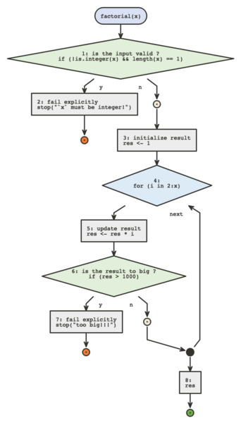
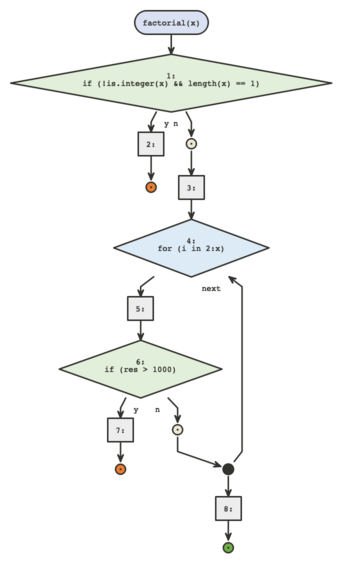
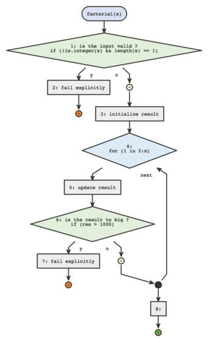
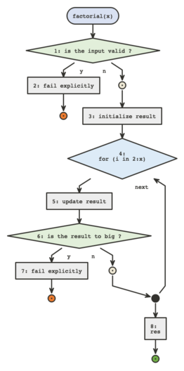
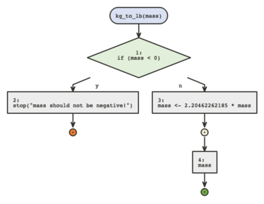
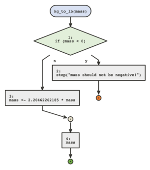
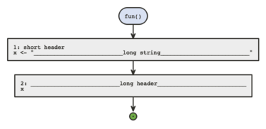
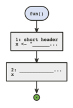
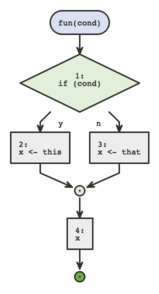
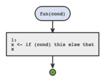

In this vignette we showcase the arguments of
flow_view() and flow_run() that affect the way
the diagrams are displayed.
prefix
prefix is used to display special comments on top of
code blocks, it must start with "#".
library(flow)
factorial <- function(x) {
## is the input valid ?
if(!is.integer(x) && length(x) == 1) {
## fail explicitly
stop("`x` must be integer!")
}
## initialize result
res <- 1
for(i in 2:x) {
## update result
res <- res * i
## is the result to big ?
if(res > 1000) {
## fail explicitly
stop("too big!!!")
}
}
res
}
flow_view(factorial, prefix = "##")
prefix can be of length > 1 in which case all given
prefixes are consideredif) will serve as headers for control flow header
blocks.{} after if (n == 0L) if we
want to use a prefixed commentThis argument is ignored when using the plantuml engine.
code
code is used to choose whether to display the code in
code blocks or only the header, if NA the code will be
displayed only if no header is defined by special comments.
flow_view(factorial, code = FALSE)
flow_view(factorial, prefix = "##", code = FALSE)
flow_view(factorial, prefix = "##", code = NA) # pay attention to the last block
This argument is ignored when using the plantuml engine.
narrow
narrow is used to narrow makes sure the diagram stays
centered on one column, it will be longer but won’t shift, which might
be easier to display on web pages for instance.
kg_to_lb <- function(mass) {
if(mass < 0) {
stop("mass should not be negative!")
} else {
mass <- 2.20462262185 * mass
}
mass
}
flow_view(kg_to_lb)
flow_view(kg_to_lb, narrow = TRUE)
This argument is ignored when using the plantuml engine.
truncate
truncate is used to provide the maximum number of
characters to be printed per line, it works for code and headers.
fun <- function() {
## short header
x <- "__________________________long string__________________________"
## __________________________long header__________________________
x
}
flow_view(fun, prefix = "##")
flow_view(fun, truncate = 15, prefix = "##")
swap
By default calls like x <- if(cond) a else b are
automatically transformed into
if(cond) x <- a else x <- b so we can display the
logic in a proper diagram.
If this is not acceptable this can be turned off by setting
swap to FALSE.
fun <- function(cond) {
x <- if(cond) this else that
x
}
flow_view(fun)
flow_view(fun, swap = FALSE)